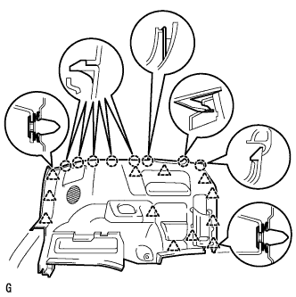
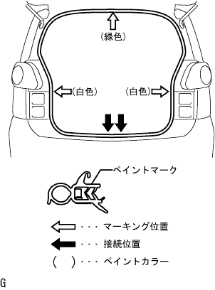

Roof head lining ASSY installation |
| 1. Roof wire No.1 installation |
 |
Attach the roof wire No.1 with a fixed tape according to the position (marking) in the figure.
| 2. Roof head lining ASSY installation |
 |
Connect the connector.
With three clips, attach the roof head lining Assies.
| 3. Installation |
Rotate the vicer holder bracket, raise the claws and attach two vicerholders.
| 4. Viser ASSY RH installation |
Attach the viser with two screws.
| 5. Viser ASSY LH installation |
Attach the viser with two screws.
| 6. Assist grip assertion (FR LH) |
Attach the assist grip with the claws.
Match the claws and attach two assisted grip cover.
| 7. Assist grip installation (RR) |
Attach 2 assist grips with four bolts.
| 8. Map lamp ASSY installation |
Connect the connector.
Attach the map lamp ASSY by making the claws.
Attach two screws.
Attach the lens by adjusting the claws.
| 9. Room lamp ASSY No.1 installation |
Connect the connector.
Attach the room lamp by matching the claws.
Attach the lens by adjusting the claws.
| 10. Lon pillar garnish LH installation |
 |
Put the claws at the bottom of the garnish first.
Match all clips and attach the front pillar garnish LH.
| 11. Pillar No.1 Garnish LH installation |
Match the claws and attach the pillar No.1 garnish.
| 12. Lonely pillar garnish RH installation |
 |
Put the claws at the bottom of the garnish first.
Match all clips and attach the front pillar garnish RH.
| 13. Lon pillar garnish LWR RH installation |
 |
Match the claws and attach the front pillar garnish LWR RH.
| 14. Attachment Pillar Garnish LH |
Connect the connector.
 |
Match the clip and attach the center pillar garnish LH.
| 15. Roof side garnish Inn LH installation |
 |
The clip is mixed and attached to the roof side in the linish LH.
| 16. Deck Trim Side Panel Assy LH installation (drive system FF) |
 |
Match the clip and claws and attach the deck trim side panel Assy LH.
| 17. Deck Trim Side Panel Assy LH installation (drive system 4WD) |
|  |
Match the clip and claws and attach the deck trim side panel Assy LH.
| 18. Rear seat 3 point type belt assigned (floor anka part) |
Tighten the rear seat 3 point type belt ASSY OUT LH (floor anka part) with bolt.
| 19. Attach Center Pillar Garnish RH |
 |
Match the clip and attach the center pillar garnish RH.
| 20. Long -seat outa belt assigned to RH |
ELR locking tilt angle inspection
 |
When the retractor is moved quietly from the attached state, check that the belt lock does not lock within 15 ° in the entire direction, and that the locking state is maintained at 45 ° or more.
With two bolts, temporarily tighten the retractor of the front seat outa belt asy RH.
The retractor part of the front seat oterty rh is tightened in the order of upper → lower part.
In the bolt, attach the choodanka part of the front seat Otabelt Asy RH.
 |
Connect the connector (for plitency) and lock the locking button.
ELR lock inspection
When the seat belt is quickly pulled out in the vehicle mounting state, confirm that the seat belt locks.
| 21. Seat belt anchor cover cap attached |
 |
Combine the claws and attach the seat belt anka cover cap.
| 22. Roof side garnish Inn RH installation |
 |
Match the clip and attach the roof side in the nagarnish RH.
| 23. Deck Trim Side Panel Assy RH installation (drive system FF) |
 |
Match the clip and claws and attach the deck trim side panel Assy RH.
| 24. Deck Trim Side Panel Assy RH installation (drive system 4WD) |
 |
Match the clip and claws and attach the deck trim side panel Assy RH.
| 25. Side No.1 Trim ASSY RH installation (drive system FF) |
 |
Match the clip and claws and attach the side No.1 trim ASSY RH.
| 26. Side No.1 Trim ASSY RH installation (drive system 4WD) |
 |
Match the clip and claws and attach the side No.1 trim ASSY RH.
| 27. Rear seat 3 point type belt assessed (floor anka part) |
Tighten the rear seat 3 point type belt ASSY OUT RH (floor anka part) with bolts.
| 28. Front sheet outa -albtown Assy RH installation (floor anka part) |
In the bolt, attach the front seat Otabelt Assy RH floor anka.
| 29. Lap belt Otanka cover installation |
 |
Combine the claws and attach the wrap belt Otanka cover.
| 30. Backdoor scuff plate installation |
 |
Combine the claw position at both ends, and attach the clip to attach the backdoor scuff plate.
| 31. Spair wheel cover ASSY installation (drive system FF) |
Attach the spare wheel cover ASSY.
| 32. Installation of the rear floor carpet (drive method FF) |
Attach the rear floor carpet.
| 33. Trunk (luggage compartment) Side tray installation (drive system 4WD) |
Attach the trunk (luggage compartment) side tray.
| 34. Luggage compartment tray installation (drive system 4WD) |
Attach the trunk (luggage compartment) tray.
| 35. Luggage room box lid installation (drive system 4WD) |
Attach the luggage room box slid.
| 36. Backdoor with the strip installation |
|  |
The backdoor weather strip is attached to combine the paint mark (white and green, one in one place) and the weather strip instruction (arrow part) on the body side.
| 37. Reardoor opening Trim Weather Strip LH installation |
Combine the paint mark of the Weather Strip (yellow and white, one, one place) and the cut -out portion (arrow part) on the woeth strip on the body side, and attach the rear door opening trimweather strip LH.

| 38. Deck side trim cover FR LH installation |
 |
Push the horns behind the vehicle and attach the deck side trim cover FR LH.
| 39. Front doorskuff plate LH installation |
 |
Insert the claws at the front door scuff plate LH front end.
Match the claws and clips and attach the front door scuff plate LH.
| 40. Front door opening trim Weather strip RH installation |
 |
Combine the paint mark of the Weather Strip (white, one place) and attach the front door opening trimweather strip RH.
| 41. Cowl side trim board RH installation |
 |
Match the claws and studs and attach the cowl side trimboard RH.
| 42. Front doorskuff plate RH installation |
 |
The claws at the front and rear ends are used.
Make the claws and attach the front door scuff plate RH.
| 43. Rear seat back hinge SUB-ASSY RH installation (overturned rear seat) |
 |
With a bolt, tighten the rear seat Batsuku hinge RH.
| 44. Rear seat back hinge SUB-ASSY LH mounting (integrated rear seat) |
With a bolt, tighten the rear seat Batsuku hinge LH.
| 45. List of cushion Assy installation (integrated rear seat) |
Rena seat cushion assemble the hook at the rear of the rear seat.
Pass the rear seat belt through the rear seat cushion cover and pad back rubber band.
 |
Rena seat cushion Assy The hook at the front of the front.
| 46. List of rear seat back Assisted (integrated rear seat integrated type) |
Attach the rear seat back associate with two bolts.
 |
Attach two clips.
| 47. List seat cushion Assy installation (rear seat split can be split) |
Lock the front side of the rear seat cushion Assy is locked by the rear seat cushion lock striker.
Pass the rear seat belt through the rear seat cushion cover and pad back rubber band.
 |
At the bolt, attach the rear seat hinge LH.
Attach a snap ring to the rear seat back hinge RH.
The rear seat hinge RH is inserted into the corner pipe of the rear seat cushion Assy right bracket.
| 48. List of back ASSY LH installation (rear seat split can be split) |
Attach the rear seat back with two bolts.
 |
Attach two clips.
| 49. Rear seat back Assembly RH installation (rear seat split can be split) |
Attach the rear seat back with two bolts.
Attach two clips.
| 50. List of cushion Assy installation (drive system 4WD) |
 |
Pass the seat belt and make the hook.
Rena seat cushion Assy The clip at the front of the front.
| 51. Rear seat Batsuku ASSY installation (drive system 4WD) |
 |
Put the rear seat back asser on the vehicle, tentatively attach the hole in the rear seat back frame and the location on the hinge side to temporarily attach the bolt.
Tighten the two bolts and attach the rear seat back Assessy.
Attach two new clips.